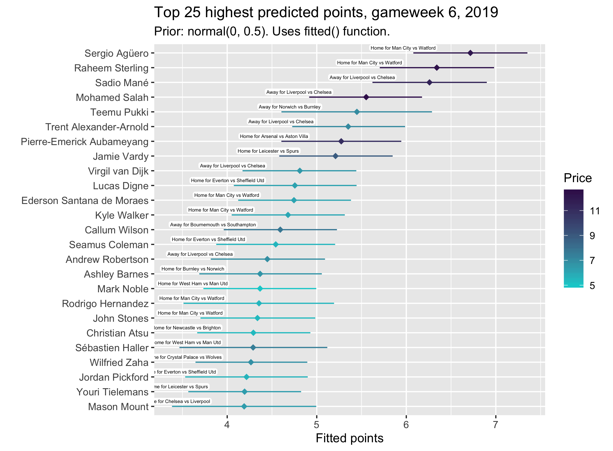
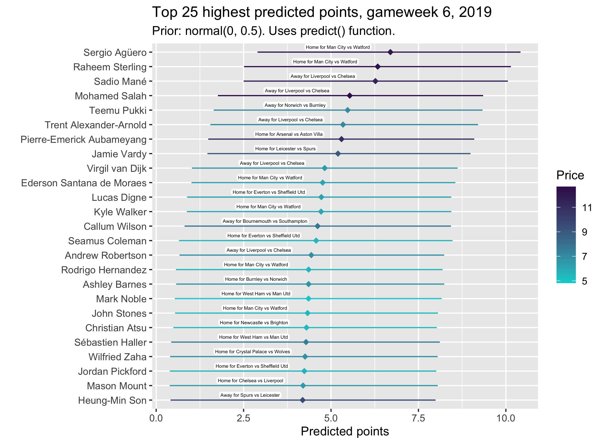

Last week, the Bayesian multilevel model I have been working on rated Mané the most likely to score big. Mané got 15 points, second only to Son. This was partly lucky, obviously, but I think it’s also a reflection of the fact that the logic on which good FPL players base their captaincy picks tends to be pretty sound. And, reminder, all this model seeks to do is represent that logic more formally and probabilistically. Mané, on form, against Newcastle at home? Yes please.
I’m quite chuffed that Mané did well, in line with the model. But, of course, not that many good players own Mané relative to his price, especially when compared to Salah. Only 2% of respondents to the Reddit captaincy poll picked him, compared to 42% and 36% for Sterling and Salah, respectively. So perhaps it wasn’t that useful a recommendation. Or, at least, it was a curious prediction given that the general thinking seems to be that Salah is a better pick. I had a discussion in the comments of the Reddit post about why Mané was predicted to outperform Salah. It seems most likely that it was to do with the data I’m using. To avoid the complications introduced by the January transfer window, I use data only from gameweek 25, 2018/19 (the first gameweek after the transfer window, I think) onwards. Mané did excellently in this period, with five double-figure gameweeks out of thirteen. Salah, meanwhile, only had one such gameweek, only scoring big (>5) on a few other occasions. What’s more, in that iteration of the model, I wasn’t using weights to downweight last season’s data relative to this season’s. This overall issue also explains why Son wasn’t seen as likely to do well, after a disappointing period in gameweeks 25-38.
I am now running the model with a gameweek weighting which essentially assigns exponentially more weight to more recent weeks. This makes it so that last week is weighted approximately 1.5x higher than gameweek 25. What this basically means is that the model treats the data as if last week happened one and a half times, while gameweek 25 only happened once. I do this to capture form. I think it’s quite intuitive. How players are playing recently is more important to whether we decide to captain them than how they played halfway through last season, but not so much so that it should be treated as drastically more significant.
This weighting doesn’t change the Salah-Mané situation, because Mané has outperformed Salah the last couple of gameweeks. But, remember, the point of the model is to help you choose a captain from among your players. If you have Salah, but not Mané, Agüero, or Sterling, it’s telling you to captain Salah. It just thinks that, based on ‘form’, general FPL performance, the fixture, and the assumption that all players play the same minutes as last week (more on that in a sec), Mané is more likely to score higher. It’s still not convinvced by Son, though. He’ll get up there with time.
Another, minor change I have made is introducing multiple membership. Before, although players such as Iwobi had one team before this season and another this season (from Arsenal to Everton), I didn’t treat these players as being members of more than one group. I’m not entirely sure on the implications of this for estimation, as I’ve not read up on it, but it’s clearly a misrepresentation of the data. Each player now has a team_1 variable and a team_2 variable, and the model formula specifies that they are members of both of these. The influence of these is currently weighted equally, as I’ve not decided on a theoretical reason to change this.
The most impactful change I have made, though, is reintroducing the minutes variable. I discussed the problems not having this as a predictor was causing last week, prompted by a Reddit comment about KDB. Essentially, the model couldn’t recognise the reason that these players had a lot of 0s was because they had been injured, and therefore also having 0 minutes. So it thought the reason they had performed so badly was to do with the other predictors (who they are, who they play against, who they play for, whether they’re home or away — you know the drill). I dropped this variable by mistake when recoding and wrangling last season’s data (from vaastav’s amazing repo). I was dreading reintroducing it, because I knew it would mean a lot of manual coding. I just couldn’t see a way to automate the process — or, at least, not one that wouldn’t just take me longer to think through and write than the manual process would take anyway. If you’re interested in what I ended up doing, look at the add_mins file on my Github. It was long, but not as bad as I thought. This sort of thing is bad data science practice, because it’s so prone to errors. But come on, I know we sometimes think FPL is all there is, but I don’t think the world will end if a few players are deemed to have played the wrong amount of minutes a few times. And, for what it’s worth, I’ve done multiple random checks of the data and not found any mistakes yet. I’ll keep an eye on it.
The way I implement this variable in the prediction stage is by assuming every player plays the same amount of minutes as last week. It doesn’t make sense to assume everyone plays 90, for obvious reasons (and when you do this Laporte, for example, is in the top ten, despite being injured). It’s equally dodgy to make my own assessments about how much everyone is likely to play, and this would take ages to do as well. I’m open to suggestions for how to improve this.
With all these changes, the model now looks like this:
points | weights(weight) ~ player + opponent + home + minutes + (1 | mm(team_1, team_2))
(Eagle-eyed readers will note I’ve also dropped the spline for gameweek. I think having this plus the gameweek weighting is excessive, and it ups the run time.)
I tightened up the priors even more than last week, because I’m really keen for the model to be conservative with the extent it listens to over-performance. You’ll see that this is once again likely what is keeping Pukki from being higher up, although he’s still up there. I’ll probably run with these priors for a few more weeks and then loosen them up very slightly for the rest of the season. Keeping them tight also saves me so much time running the model, because it’s quicker when it has more informative priors. Like I said last week, if you think depending on the priors like this is pernicious, just don’t @ me. I don’t want to hear it. It’s purely about skepticism. It’s not virtuous to blindly follow data where it leads.
Without further ado, all those changes give us the following top 25, first shown with the fitted() function, and then with predict(). I discussed the difference last week. I think predict() better reflects the overall degree of uncertainty in this stuff, but fitted() gives us a better idea of the variability in this certainty across players. Plus it looks prettier.


So Agüero is top, wth Sterling second, which is likely to do with their comparably easy fixture (Watford rather than Chelsea). Surely City will score multiple goals against Watford. The model recognises this (sort of).
The third and fourth spot are still taken by Liverpool’s two big-hitters, though. And then there’s Pukki, ever-present near the top (but notice the wider credible interval). It will be interesting to see if he can keep this purple patch going. Other things to note include Auba breaking into the top ten, and Vardy staying up amongst it. It’s hard to argue with their consistency, and I think Auba at home is always a good choice.
Remember, the assumption here is that all these players play the same minutes as last week. This seemed the most sensible assumption for now, but I’m going to try to think of a more appropriate way to do it. I think Stones is out injured, but is in the top 25, which he obviously shouldn’t be. It might just be a case of manually setting problematic players to 0 minutes.